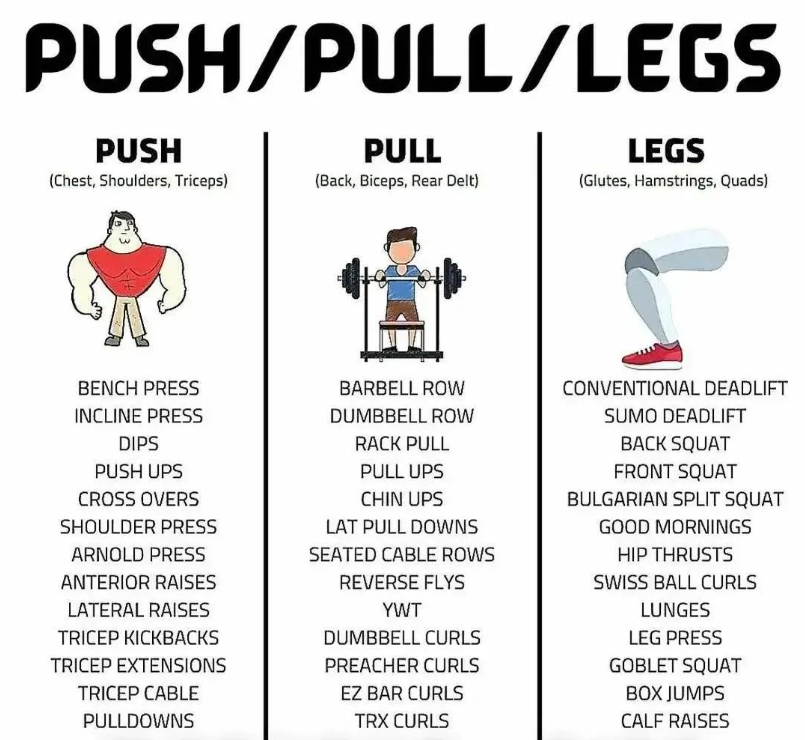
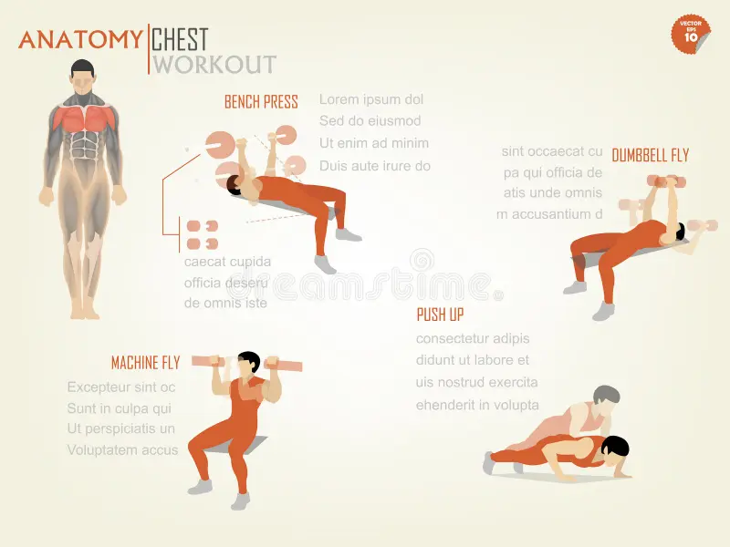
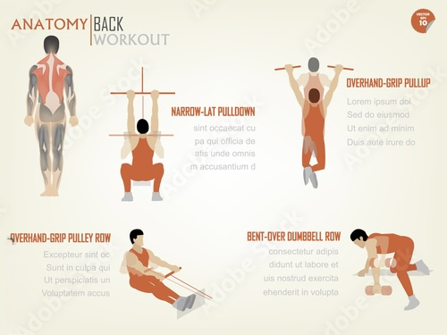
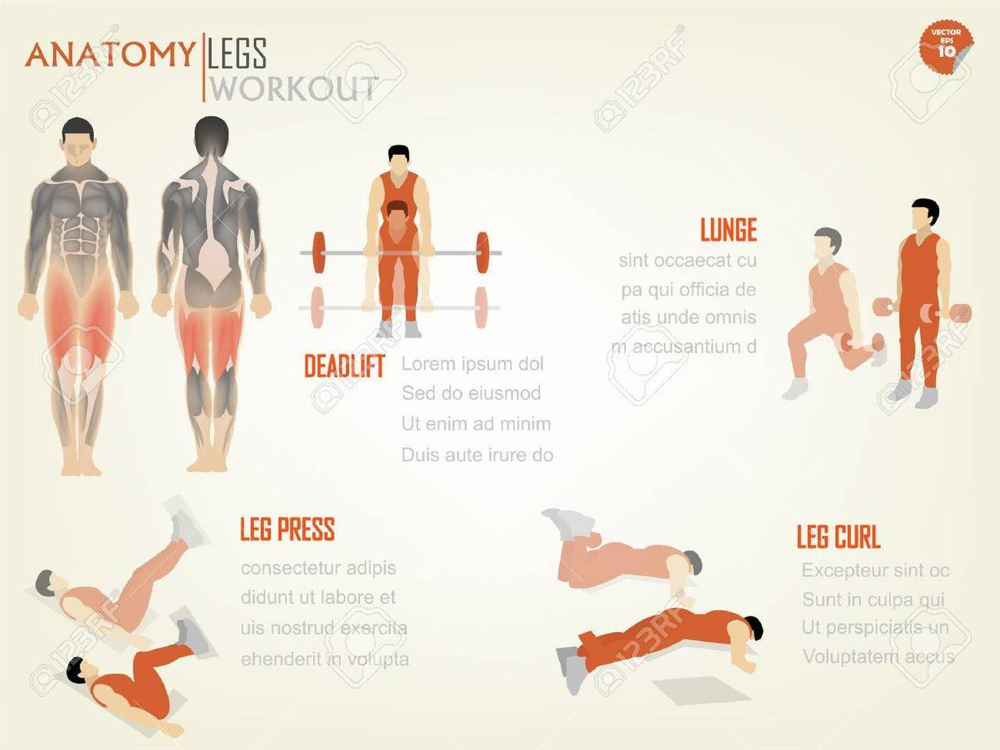

Overview: Simple, solid, and repeatable

- Schedule: Train 3 days/week (e.g., Mon · Wed · Fri). Rest at least 24h between sessions.
- Equipment: Machines + dumbbells preferred; barbells optional.
- Intensity: RPE 6–7 (leave 2 reps in reserve). Move with control.
- Rest: 60–90s for accessories; 90–120s for compounds.
- Log: Track weights/reps; add small weight when you hit the top of the rep range with good form.
Warm-up (5–7 min)
- Cardio 3–4 min: brisk walk, bike, or row.
- Mobility: 10 hip hinges · 10 bodyweight squats · 10 band pull-aparts.
- Two light “ramp” sets on your first exercise before working weight.
Tip: Move smoothly; finish warm-up slightly warm, not tired.
Day 1 · Push (Chest · Shoulders · Triceps)

Core Lifts
- Machine or Dumbbell Bench Press - 3*8–10 · rest 90s
- Incline Dumbbell Press - 3*10–12
- Machine Shoulder Press - 3*8–10
Assistance
- Lateral Raise - 3*12–15
- Cable Triceps Pressdown - 3*10–12
- Optional: Plank - 2*30–45s
Form cue: Press through mid-foot, keep ribs down, don’t bounce the weight.
Day 2 · Pull (Back · Biceps)

Core Lifts
- Lat Pulldown or Assisted Pull-up — 3*8–10 · rest 90s
- Seated or Chest-Supported Row — 3*10–12
- One-Arm DB Row — 3*10/side
Assistance
- Face Pull — 3*12–15
- EZ-Bar or DB Curl — 3*10–12
- Back Extension — 2*12–15
Form cue: Pull elbows toward your hips, pause briefly, control the return.
Day 3 · Legs (Quads · Glutes · Hamstrings · Calves)

Core Lifts
- Goblet Squat or Barbell/Smith Squat — 3*8–10 · rest 90–120s
- Romanian Deadlift (DB or Bar) — 3*8–10
- Leg Press — 3*10–12
Assistance
- Walking Lunge — 2*12/side
- Leg Curl — 2*12–15
- Standing or Seated Calf Raise — 2*12–15
- Finisher: Wall Sit — 1*60–90s
Form cue: Keep knees tracking over toes, hinge at hips, full-foot pressure.
Progression & FAQ
- How to progress: When you reach the top of a rep range on all sets with clean form, add the smallest plate (2.5–5 lb per side for machines/barbells; 2–5 lb per dumbbell) next time.
- Deload: Every 6–8 weeks, reduce volume by ~30% for one week or train at RPE 5–6.
- Core & cardio: Add 5–10 min easy cardio after sessions and 2–3 brief core sets anywhere.